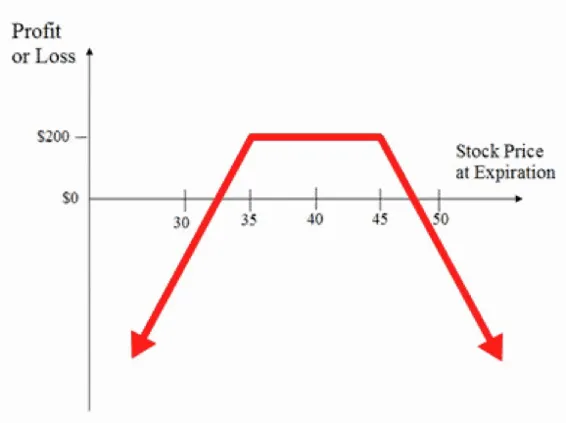
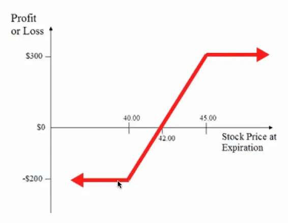
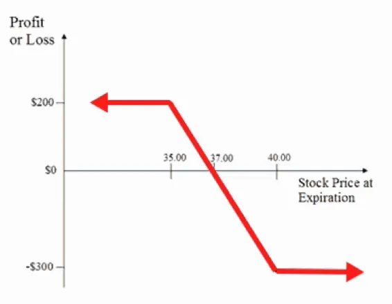
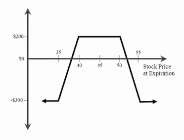
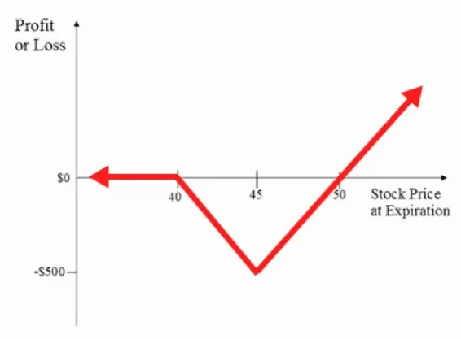
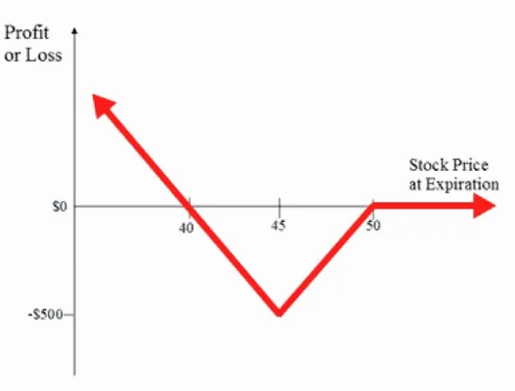
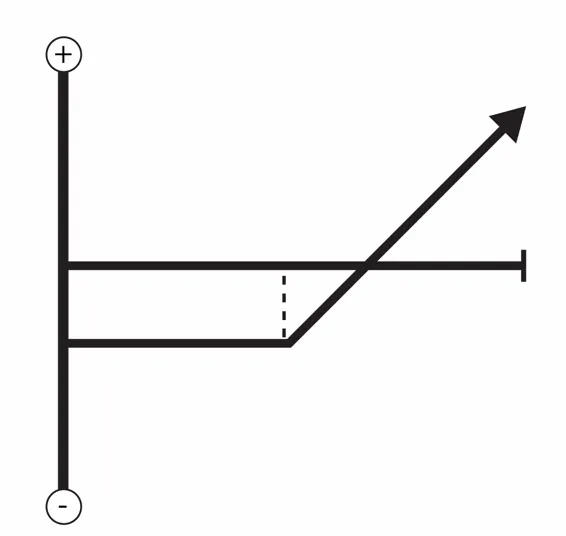

Options strategies are divided in two in terms of how they are constructed. We have the single-leg and the multi-leg options strategies. Single calls and puts are the building blocks for every possible options strategy you might use in the market. An example is buying one put or selling one call. Those single-leg options strategies are more than fine to use. When you start combining options of different types and strikes, however, you have the ability to create a multi-leg strategy that profits from whatever assumptions you have about a stock. More importantly, you can both define risk and increase your profit potential by using multi-leg strategies.
Now, for some of those all-important strategies you’ve been waiting for.

That can be a better way to tackle the situation we just looked at. It’s the same idea except that the call and the put are set to different prices with the put strike price usually lower.
That strategy again tackles the question of, “What is going to happen
to this stock?” It gives you a sure-fire way to see some cash but with
the possibility of trading away a serious profit. Again, it’s all about
flexibility. In an example, for a stock that’s now trading at $42, you
could buy a call with a strike price of $40 and sell a call with a strike
price of $45. You’ll likely pay more to buy your call than you gain
from selling the second call. Let’s say it was $0.25 for the $40
contract and $0.60 for the $45, leaving you paying $0.35 in total to
set your position. For this to work best, you’re hoping that the stock
will end up somewhere between $40 and $45 at the deadline because
the second contract will not be exercised and you will make a profit.
If it rises above the $45, you’ll still make a profit but it will be capped
at that exact profit if your buyer exercises their right to purchase the
stock. The downside is that your stock could skyrocket to $50 and
you won’t see a profit above the $50 but that can be acceptable if
you’re looking to cut down your costs and still make a profit. The
example above is a bull spread.
To setup that trade, buy one in-the-money call and sell one out-of-themoney call at a higher strike price. The combination should result in a
net debit. Entering those trades thirty to sixty days until expiration is
preferred. Since option pricing is generally low, you’ll want to
increase the trade duration and give yourself ample time for the stock
to move into a profitable zone.
Because you’re both buying and selling a call, the potential effect of a
decrease in implied volatility will be somewhat neutralized.
The risk is limited to the net amount paid for the options. The time
decay or theta on that strategy is neutral as the eroding value of the
options purchased and sold cancel each other out.
That can also work on a bear spread if you reverse the trades and sell
your call lower than you buy your call.

This strategy is the direct opposite of the bull spread. To set up the trade, buy one out-of-the-money call at a higher strike price and sell one in-the-money call. The combination of options should result in a net debit. Entering the trade thirty to sixty days until expiration is preferred in order to give the stock time to move into a profitable zone. Volatility is also neutral for that spread. The maximum potential loss is limited to the amount paid for the options.

A lot of options traders love the iron condor. It's a great marketneutral option strategy that you can employ any time the market gets a little bit tilted and starts trading in a sideways fashion. The diagram above is the profit and loss diagram for the iron condor. It has two legs or two sides to it and is the combination of the bull and bear spread. The iron condor is a strategy that's based on selling options and collecting a premium up front for the trading month and then hoping that those options expire worthless at the end of the expiration cycle, allowing you to keep the full profit. It has a limited risk feature. From the diagram above, here's what would happen if a stock were to trade or were to close right at $35. You'd see, if the stock closed at $35, that we'd actually lose $300. And if it closed anywhere below $35, we'd actually lose $300.
Now, you can see here that if the stock were to trade higher than $55, then we would actually lose that same amount of money, that same $300. If the stock were to actually close anywhere between those values, however, let's say anywhere between $40 and $50, then we would actually keep our $200 premium.
You can think of that trade as bracketing the market and determining two areas, an upper boundary and a lower boundary of where the market will not trade, and then profiting and positioning to make money if the market trades sideways.
To set up that trade, sell one out-of-the-money put, buy one out-ofthe-money put at a lower strike price, sell one out-of-the-money call and buy one out-of-the-money call at higher strike. Entering those trades thirty to sixty days until expiration is preferred and should allow you to collect enough premium after commission costs to make the trade worth placing. Time decay or theta works positively for as part of that position. Falling implied volatility will generally help the position while rising implied volatility will generally hurt the position. It is a great market-neutral strategy. You don't have to guess and hope and pray that the stock rallies or falls. It just has to stay within a wide range for you to keep your premium.

This is really a great strategy and an easy way to take a long position in a stock without taking the extra risk of a long option. The market outlook here is that you want to see a pretty significant upside move in the underlying stock. What you want to do with this is that you also want to keep your downside risk limited. The strategy has more limited downside risk as opposed to just a regular call option. The whole idea of the call backspread is to make one point the maximum loss point ($45 on the diagram). You actually might end up not making any money beyond that point but at least you won’t lose any money.
To set up that strategy, sell one at-the-money call and buy two out-ofthe-money calls at a higher strike price. The combination of options
should result in a net debit.
For example, you could sell one in-the-money $40 strike call and buy
two out-of-the money $45 strike calls. You just want to sell twice as
many. If you want to do the spread as selling two and buying four, or
selling ten and buying twenty, you can do that. As long as you have
that 1:2 ratio, you should be in good shape as far as building the
strategy
The maximum loss would occur should the stock close right at the
upper strike price. If the stock closed right at $45, that would create
the maximum loss of $500 in the above case.
That is actually a pretty good strategy for a market that is pretty
volatile and highly volatile in either direction. It’s not a good strategy
for sideways or neutral markets and it’s flat out horrible for those
types of markets. The profit potential for the strategy is technically
unlimited to the topside. Entering those trades sixty to ninety days
until expiration is preferred. Since option pricing is generally low,
you’ll want to increase the trade duration and give yourself ample
time for the stock to move into a profitable zone. That can also work
in a bearish situation if you reverse the trades and that will be
discussed next.

The Put Backspread is the exact opposite of the Call Ratio
Backspread and it is used when you are bearish on the market
outlook. To set up the strategy, sell one at-the-money put and buy two
out-of-the-money puts at a lower strike price. The combination of
options should result in a net debit.
Entering those trades sixty to ninety days until expiration is also
preferred. Since option pricing is generally low, you’ll want to
increase the trade duration and give yourself ample time for the stock
to move into a profitable zone. The profit potential for the strategy is
technically unlimited to the downside.

That can be used as a way of purchasing a particular stock at a discount. It only works if your account has enough money to actually buy the stock because you will be obliged to do so if the option is exercised. If it isn’t, you’ve made some money because it will expire without forcing you to buy but you’ll still bank the premium in the process. Either way, assuming you really do want that stock, you win. In that strategy, you’ll set the strike price at the exact price you’re looking to obtain that stock for. The only downside is that it could drop a lot lower and at that point you really won’t feel like you got the best bargain. Out of the money puts have a better chance of expiring without being exercised. If you’re only looking to make profit on the premium or you’re not desperate to own the underlying stock, that can often be your best bet. If you do end up owning the stock, your usual hope is that it will change direction and you can trade it to make another profit.